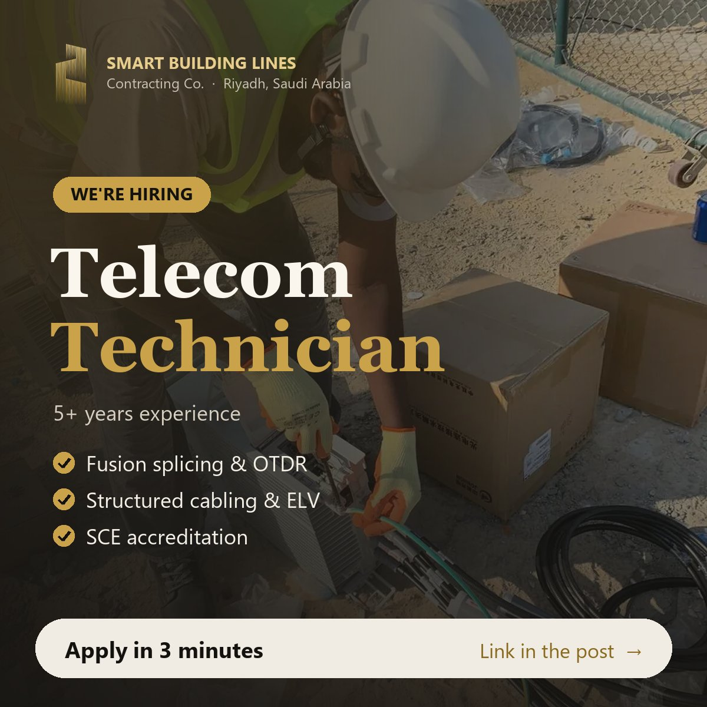

SBL is looking for experienced Telecom Technicians for fiber optic and ELV projects across Saudi Arabia.
What you'll do
- Install and pull fiber optic and copper cables (OSP/ISP)
- Fusion splicing, termination, and OTDR / power meter testing
- Install structured cabling, racks and ELV systems (CCTV, access control)
- Troubleshoot and maintain telecom networks
What we're looking for
- Diploma or vocational certificate in Telecommunications or Electronics
- 5+ years of experience (Saudi experience preferred)
- SCE technician accreditation (or able to obtain)
- Hands-on experience with splicing machines and OTDR
- Transferable Iqama (non-Saudis)
What we offer
- Competitive salary based on experience
- Housing and transportation
- Medical insurance
Apply now – 3 minutes
See all open positions